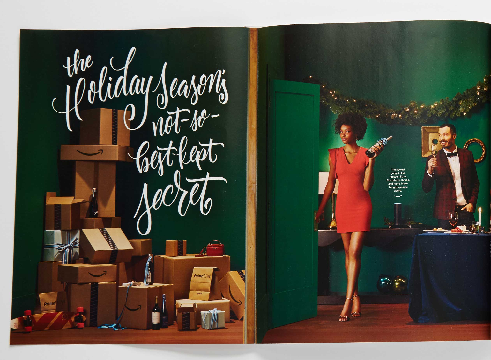
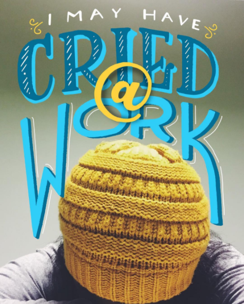
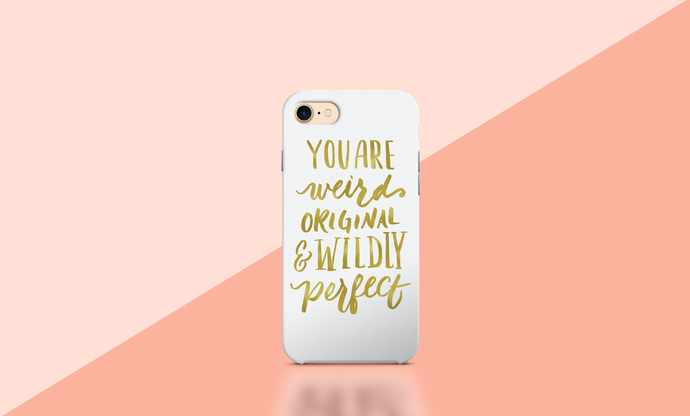
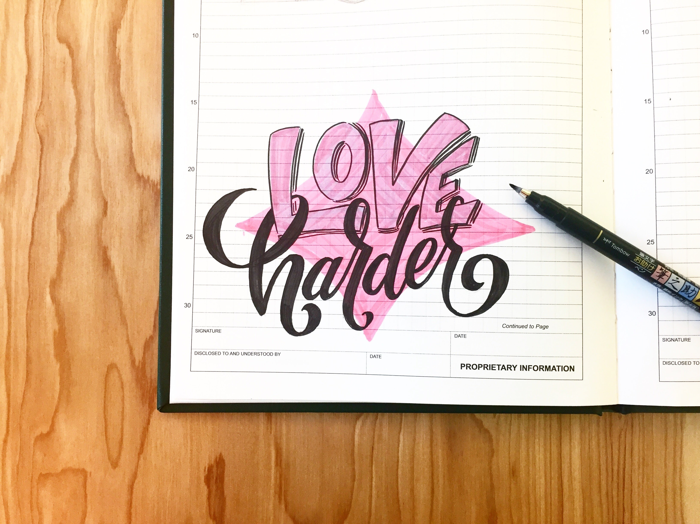
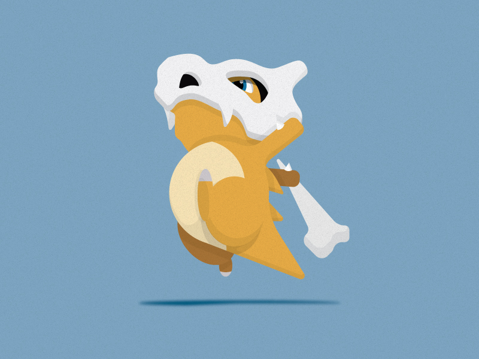

Short Bio
Marla Bonner is a Graphic Designer based in Seattle Washington, with over five years of experience in digital and print advertising. She has worked in multiple ad agencies and has been able to work with some of her favorite brands. Marla's focus is in lettering and illustration plus she has experience in video, digital, web and social media. Currently, She's working as a brand designer at Amazon, and launching Mel+Marla a store for people of color.
Embracing Creative Instincts
I was born June 1989 in St. Martin, Haiti, adopted by my family, and moved to Minnesota…AKA the Midwest Tundra. I grew up in the suburbs with my parents and my two sisters. My older sister is my parent's biological child, and my youngest sister is also adopted, but from South Korea. I was raised to fully embrace my creative instincts which mean my ever-patient mother scrubbed a lot of red marker off of walls and appliances. My parents are amazing people. They've raised three women, with three wildly different backgrounds, and personal challenges. They have been our cheerleaders, our champions, and our confidants as we each work hard to find our place in the world and change the world's assumptions about who we are supposed to be. They created a home that was a sanctuary not only for their children but for any of our friends who needed an environment where they could be safe and accepted.

How did you first get interested in design?
It all started when I took an intro to design class in my junior year of high school. I was very handy with Photoshop effects and filters! I went to college (Minnesota State University Mankato) with the intent of getting a design degree, but I was never able to track down my assigned advisor to register for the design courses... so, I switched majors to drawing and painting! I loved drawing but knew I couldn't make a career of it. Junior year I began taking design courses to have access to the Mac lab after hours because the guy I was dating (and am now engaged to) spent all his time in the lab. I graduated with a BFA in Drawing and Painting but needed more design experience. After I had graduated from Mankato State, I took a Post-Bacc course in design at Concordia St. Paul, MN and was hired before I could graduate.

Tell me about the work you've done?
My specialty is in lettering/illustration, but since I've worked primarily in advertising agencies, I've become extremely adaptable. I'm so greatful to have worked on a few well-known brands like General Mills, Jack Links, Polaroid, Subaru, JR Watkins, Amazon, Twitch, Women's March to name a few.
What are you working on right now, either for work or for yourself?
Currently, I'm working as a Branding Designer for Amazon. And I am starting a poster/swag store with my design friend Melanie Stovall. We both are in advertising design, which means we rarely work on products that are marketed to demographics we identify with due to our skin color and culture. So we're making shirts, poster, pins, we are stoked on and speak to us, and hopefully everyone else.

What are your proudest accomplishments of your career?
Being able to do a last minute project for the Women's March this January was AMAZING! I love the when design and social change combine. Those are the projects that feed your soul as well as your creative spirit.
What are you doing that's special that sets you apart from your peers?
I can't say I'm doing anything drastically different than anyone else. I'm 27 and still figuring out my place in the world, and the field of design. However, I think joining my local AIGA chapter right out of college was the best decision I could have made. It started the foundation for my network and gave me the confidence I needed to talk about design with my peers.

What have your experiences been as a person of color in the design industry?
First of all, I love this question. I have had a rocky experience in design as a person of color. I have had jobs where I know I was hired for my "diversity" over my design capabilities, and have been treated differently than other employees. This resulted in me working harder to prove that I not only met the expectations of the position but exceeded them. I have been the only black designer on every design team I've been a part of, and I've never had a black design mentor (if anyone is interested, hit me up!). This makes for a pretty lonely work experience when there is no one who has walked in your shoes and can give you some perspective on how to navigate your career.
It took me a while to realize that while I see myself as a "Designer", I am in an industry that sees me as a "Black designer".
What are your biggest motivators?
Personal growth! I love seeing my design aesthetic evolve, and become a timeline of the stages of my career and my life. I love pushing and tweaking my methods. The process of creating is cathartic for me.

What would you like to see changed about the design field?
I would like the field to realize that diversity makes us all better at our jobs. If we only work with people who have the same general opinions and life experiences as us then we're not truly innovating or thinking past our own assumptions.
What advice would you give to folks from a similar background who are in design or hoping to get into it?
Be vocal about what you need! No one can advocate for your career better than you. If you're looking to get into a design career I would suggest meeting with as many designers as possible to grow your network and get you comfortable with discussing your thought process.
